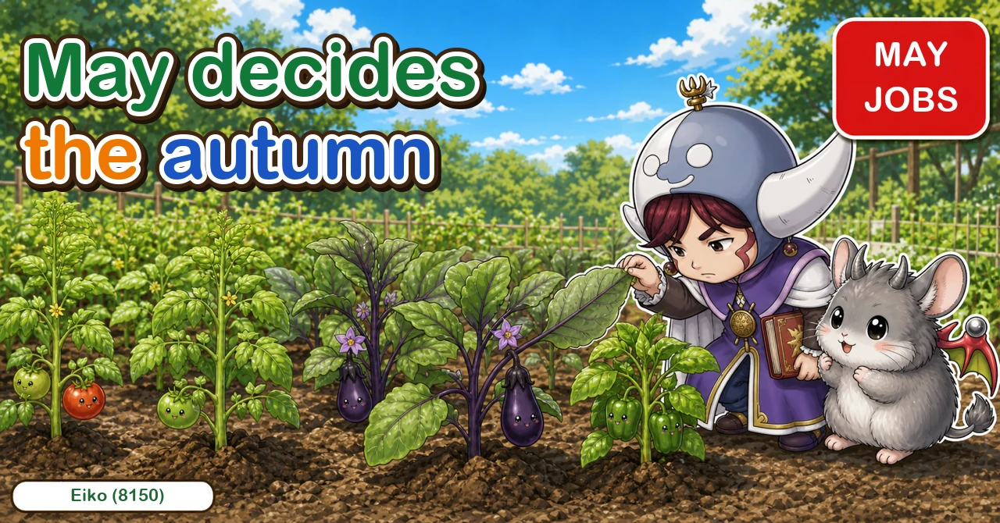
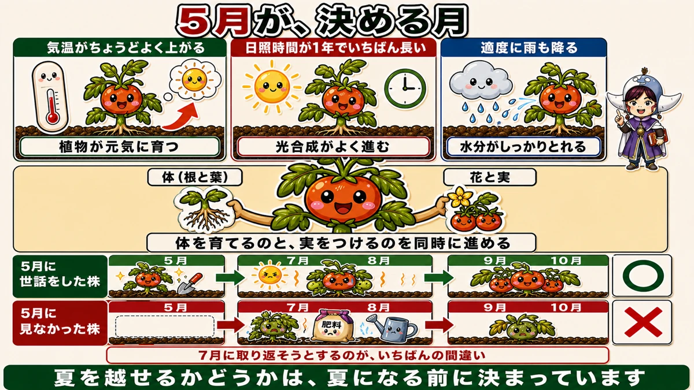
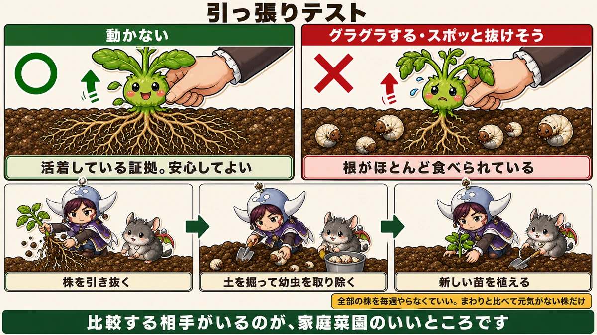
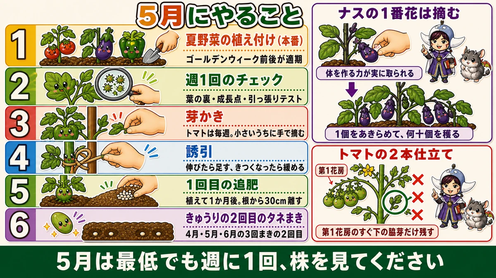

Everything up to autumn is decided in May 🍅 What to do this month

🗨️ "It's planted, so now I wait."
🗨️ "They always collapse in July."
🗨️ "One plant is slower than the rest."
Hello, I'm Eiko. Eight years of growing vegetables organically and without pesticides, and a teaching licence in science.
The monthly instalment — May. And this is the most important month of the year.
The point, up front:
Whether you're still picking in September is decided in May.
Crops stall in the heat not because of something you got wrong in July, but because of something you didn't do in May ☺️
Why May

What this diagram says （図解の文字）
- May is the deciding month
- Temperatures rise to just the right level — plants grow vigorously
- The longest daylight of the year — photosynthesis runs well
- Reasonable rainfall — water is available
- Body (roots and leaves) ／ flowers and fruit — growing the body…
May gives plants the best conditions of the year:
- temperatures that climb to just the right level
- the longest daylight of the year
- reasonable rain
Not too hot, not too cold, bright, and wet enough. It doesn't get better than this.
Building the body and the crop at once
And the plant is doing something difficult: growing its body and flowering and fruiting at the same time.
As a young plant it only had to build a body. In summer it mostly has to fruit. May is where the two overlap — its busiest month.
So whether you intervene now decides what the plant ends up being.
Trying to fix it in July is the mistake
The usual pattern:
- plant in May, feel satisfied, don't look closely
- growth falls away in midsummer
- panic — more feed, more water, various remedies
That's backwards. In high summer the plant is enduring heat and drought and has no spare capacity to take anything in.
Whereas a plant whose body was properly built in May gets through the heat and starts fruiting again once it cools, in early autumn.
Whether a plant survives summer is decided before summer.
So: once a week
Through May, get to the garden at least once a week and look at the plants. There are specific places to look.
① The undersides of leaves, and the growing point
Looking at a plant from above isn't enough. Turn the leaves over. A plant that looks untouched from above can have an aphid colony starting underneath.
And the other place: the growing point — the new shoot. It's the most metabolically active part of the plant, soft and rich — which makes it the best meal available. Aphids gather there first.
Match the method to the numbers
- A few — pick them off with tweezers. The most certain method
- A lot — brush off, wash off, then soap-and-oil for ten minutes
And never treat it as a one-off.
One more signal: a leaf that's curled up, or chewed. Either one means check that leaf's underside and the plants around it. Something is there.
② The pull test

What this diagram says （図解の文字）
- The pull test
- ○ doesn't move — proof it has rooted in. Nothing to worry about
- × rocks, or feels like it would lift out — most of the roots have been eaten
- Pull the plant ／ dig and remove the grubs ／ plant a new one
When one plant is behind the others, there's an on-the-spot test: hold the base, rock it gently, and pull very slightly upward.
- It doesn't move → well rooted. Nothing wrong
- It rocks, or feels like it would lift out → most of the roots have been eaten
The culprits are underground: chafer grubs, or cucumber beetle larvae on cucurbits. "Wilting by day, fine by night" is the same problem — the pull test finds it earlier.
If it's loose, replant
Honestly: a plant whose roots have been eaten does not recover.
- Pull it out
- Dig the spot and remove the grubs
- Plant a new one
In May there's still time. Finding it now decides that plant's whole year.
And you don't need to test everything weekly — only the plants that look behind compared with their neighbours. Having something to compare with is the home gardener's advantage.
③ Side shoots and tying in
Tomatoes throw side shoots from every leaf joint. Left alone you lose track of which stem is the main one, air movement drops, and the plant divides its resources.
A weekly look means removing them small, by hand. Cut them once they're large and the wound is large too.
If you want two stems
There's one side shoot to keep: the one immediately below the first flower truss. Keep that and remove all the others.
Why that one? It's where the most vigorous side shoot comes. Keep one higher up and it never thickens properly.
Tying in is both adding and loosening
- as it grows, add a tie higher up
- if a tie has gone tight, loosen it
Growth is fast in May, so a tie that was right last month is cutting in this month. Check every visit.
④ Remove the first aubergine fruit
Hard to do without knowing why: take the first fruit off while it's about 3 cm.
The reason is that the plant is still small. Let a fruit swell now and everything that should be building the plant goes into it instead.
You give up one fruit to get dozens. Exactly the same logic as the pull test and the side shoots: in May, you protect the body.
⑤ Feeding
Feed once fruit has started setting, not before. Fed too early, you get leaf; and a fruiting plant eats while it fruits, so from then on it's regular.
What to plant in May

What this diagram says （図解の文字）
- What to do in May
- 1 Planting out the summer crops — the main event
- 2 The weekly check — undersides, growing point, pull test
- 3 Side shoots — tomatoes weekly, pinched off small by hand
- 4 Tying in — as it grows…
This is the month the summer crops go in — tomatoes, aubergines, peppers, cucumbers, courgettes, sweet potatoes, ginger and taro.
And it's the last comfortable window for sweetcorn, edamame and okra from seed.
A weekly five minutes
None of this is difficult. The whole month is:
- turn some leaves over
- look at the growing points
- rock the plant that looks behind
- pinch the side shoots
- check the ties
Five minutes a week in May buys the autumn ☺️
To sum up
- ✅ September's harvest is decided in May
- ✅ May has the year's best conditions — and the plant is doing two jobs at once
- ✅ Fixing things in July is too late; there's no spare capacity then
- ✅ Visit weekly
- ✅ Turn the leaves over; check the growing points
- ✅ A few aphids: tweezers. Many: brush, wash, soap
- ✅ Pull test: doesn't move = fine; rocks = roots eaten
- ✅ Eaten roots don't recover — pull, dig out the grubs, replant
- ✅ Tomato side shoots weekly, pinched small
- ✅ For two stems, keep the shoot below the first truss
- ✅ Ties need loosening as well as adding
- ✅ Take the first aubergine fruit off small
- ✅ Feed once fruit has set, not before
You don't have to do all of it. This weekend, turn over five leaves and rock one plant. That's the May routine 🍅
Thank you for reading!